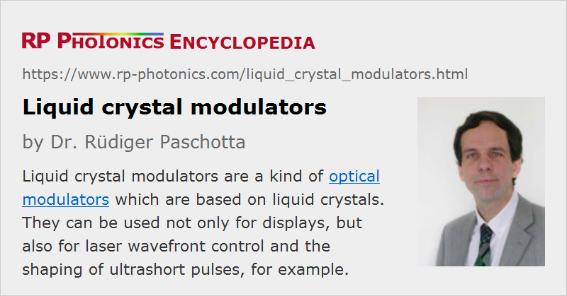

Liquid Crystal Modulators
Acronym: LC modulators
Definition: optical modulators which are based on liquid crystals
More general terms: optical modulators
German: Flüssigkristall-Modulatoren
How to cite the article; suggest additional literature
Author: Dr. Rüdiger Paschotta
Liquid crystal modulators are a kind of optical modulators which are based on liquid crystals. They are mostly used for displays, but also for various other purposes, as discussed in the section on applications below.
Operation Principle
Liquid crystals are substances which are liquid but not optically isotropic – which is unusual for liquids. They contain long molecules which have a tendency to get aligned to each other, and that preferential orientation leads to anisotropic optical properties. In particular, there is birefringence: the refractive index depends on whether the optical electric field is in the direction of the molecules or perpendicular to them. In most cases, the birefringence is of uniaxial type, i.e., there is an optical axis such that the refractive index becomes independent of polarization direction for light propagating along that axis.
The orientation of those molecules can be manipulated with an applied electric field: they tend to get aligned in a direction parallel to the field lines. Another relevant aspect is that one can make suitably prepared surfaces (e.g. a glass surface with a polyimide coating which is brushed in a certain direction), which pull molecules towards some preferred orientation.
TN Modulators
A typical implementation of a liquid crystal modulator – the TN = twisted nematic type – is based on a twisted nematic liquid crystal material. That material is contained in a small chamber between two glass plates prepared for a preferential orientation of the liquid crystal molecules; the plates are oriented such that their preferential orientations are perpendicular to each other. In the zero voltage state, this leads to a twisted orientation pattern of the molecules: while those molecules close to one surface are oriented according to its preferred direction, on the way towards the other glass surface the orientation is rotated more and more towards the preferred molecule orientation of that surface.
The optical effect of that twisted configuration is that when incident light starts with a polarization corresponding to the molecule orientation on the input side, during the passage through the liquid crystal material the polarization is rotated to the perpendicular direction; the light polarization is “dragged along” by the variable orientation of the molecules. That, however, can be prevented by applying an electric field via two transparent electrodes at the opposite glass surfaces. For a strong enough electric field, the molecule orientation is getting nearly perpendicular to the glass surfaces, and the effect of polarization rotation vanishes. For medium values of the electric field, the polarization rotation is only more or less reduced.
The liquid crystal cell can then be enclosed by two polarizers with crossed orientations. Without an electric voltage applied to the liquid crystal cell, light which is transmitted by the input polarizer can also be largely transmitted by the output polarizer. By applying a voltage, one can reduce the transmission. Usually, a few volts are sufficient, and hardly any electric current needs to be provided.
When applying a DC voltage over longer times, the performance of such a cell would usually be degraded by a kind of electrolysis process. That can be prevented by applying alternating voltage (AC), typically with a rectangular shape and a moderate frequency. Such an alternating voltage can easily be generated e.g. with CMOS electronics.
The described TN modulator configuration is often used in liquid crystal displays. They appear gray without an applied voltage, and can be made darker (nearly black) with a voltage.
IPS Modulators: In-plane Switching
A modified kind of modulator is based on in-plane switching. Here, the electrodes are not simply applied to the opposite glass plates; instead, one uses structured electrodes on one glass plate only, so that electric fields can be generated which are more or less along the glass surface rather than perpendicular to it. Typically, the liquid crystal cell would still be of twisted nematic type; only the manner in which the applied electric field destroys the twisted configuration is different. Also, one may use polarizers which are oriented in the same direction, rather than crossed polarizers. The transmission is then originally very low and decreases with the application of the electric field.
Other Configurations
Particularly for other applications than displays, one may use further modified configurations. For example, one can omit the input polarizer when working with polarized laser light as an input. One may even work without any polarizer for realizing a phase modulator. One can choose the modulator design such that the polarization state is not modified, but only the change of optical phase. Tentatively, the modulator designs are simpler for non-display applications, since one often requires operation only with narrow wavelength ranges and/or restricted angular ranges.
There is also the technology of liquid crystal on silicon (LCoS). Here, a typically quite small two-dimensional array of liquid crystal modulators is fabricated on a silicon backplane, which in addition to the modulators contains CMOS electronics for controlling the pixels. Between the electronics and the liquid crystal modulators, there is a reflective layer; such devices need to be used in reflection. They are suitable for projection displays, where the projected image area is typically far larger than the active chip area. Three different LCoS chips may be used for red, green and blue color components. However, there are also single-panel LCoS color displays, e.g. for use in miniature projectors (pico-projectors). There are also other fields of applications, for example programmable beam steering and pulse shaping.
Performance Figures of Liquid Crystal Modulators
Depending on the application (see below), different performance figures of modulators can be relevant. The most important of them are:
- Maximum transmission: This is important for display applications, for example, for achieving high image brightness with limited illumination power.
- Modulation contrast: Modulators differ quite substantially in terms of contrast, which can be important for displays, for example.
- Switching speed: This is limited by the time required by the molecules for changing their orientation. Such processes are relatively slow, typically requiring a few milliseconds. (Typically, the recovery into the zero voltage state takes more time than the adjustment to a non-zero voltage state.) Liquid crystal modulators belong to the optical modulators with lowest speed. For some applications, one needs to optimize the speed, for example by realizing quite thin liquid crystal cells, using materials with low viscosity or applying overdrive signals.
- Wavelength range: The performance details can be somewhat wavelength-dependent, limiting the usable wavelength range.
- Power consumption: A specific advantage of liquid crystal modulators e.g. for passive displays is they have a quite low power consumption. In active displays, however, power consumption is dominated by the backlight, and that depends on the maximum transmission of the modulators.
Various further aspects can be relevant, depending on the application. For example, it can be disturbing that some LC displays exhibit substantial image distortions when being touched; this should be avoided particularly for touch screen displays. Another aspect can be the temperature range in which a modulator can properly work.
Applications of Liquid Crystal Modulators
Displays
Most liquid crystal modulators are used in displays. They are often produced in large volumes and technologically optimized to a very high degree.
See the article on liquid crystal displays for more details.
Laser and Optics Applications
Liquid crystal modulators in the form of intensity modulators or phase modulators have found some applications in laser and optics technology where their quite limited switching speed can be tolerated.
Single-element modulators can be used to modulate a whole laser beam; relatively large areas can be realized for beams with high optical power. Such variable optical attenuators can also used as electrically controlled beam shutters, for example. Also, they can be used for noise eaters, although their bandwidth is tentatively lower than desirable for such an application. Further, there are electrically controllable waveplates, also called active retarders.
Spatial light modulators (SLM) can be made which contain many liquid crystal cells in a one-dimensional or two-dimensional array. (A display panel can actually also be considered as a 2D spatial light modulator.) One-dimensional SLM are used for certain types of Fourier transform pulse shapers, for example, or for tunable optical filters, e.g. based on spatial separation of spectral components with diffraction gratings or on a Lyot filter design.
Two-dimensional devices find applications in signal processing and holography, for example. One can also use them for wavefront correction, i.e., in adaptive optics. Arrays of phase modulators can also be used for programmable beam steering.
Other Applications
Some cars contain an interior rear view mirror containing a liquid crystal device. One can automatically reduce the reflectivity of the mirror in situations where the driver would be irritated by two intense light from the headlights of a following car.
Suppliers
The RP Photonics Buyer's Guide contains 6 suppliers for liquid crystal modulators.
Questions and Comments from Users
Here you can submit questions and comments. As far as they get accepted by the author, they will appear above this paragraph together with the author’s answer. The author will decide on acceptance based on certain criteria. Essentially, the issue must be of sufficiently broad interest.
Please do not enter personal data here; we would otherwise delete it soon. (See also our privacy declaration.) If you wish to receive personal feedback or consultancy from the author, please contact him e.g. via e-mail.
By submitting the information, you give your consent to the potential publication of your inputs on our website according to our rules. (If you later retract your consent, we will delete those inputs.) As your inputs are first reviewed by the author, they may be published with some delay.
See also: optical modulators, liquid crystal displays
and other articles in the category photonic devices
|  |
If you like this page, please share the link with your friends and colleagues, e.g. via social media:
These sharing buttons are implemented in a privacy-friendly way!